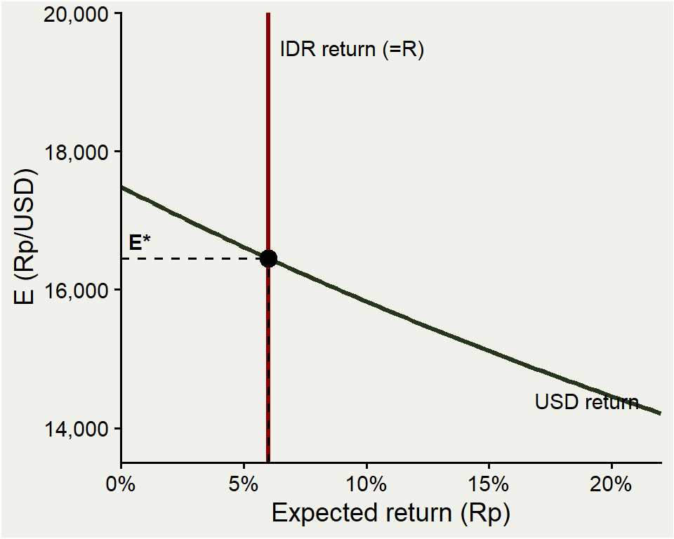
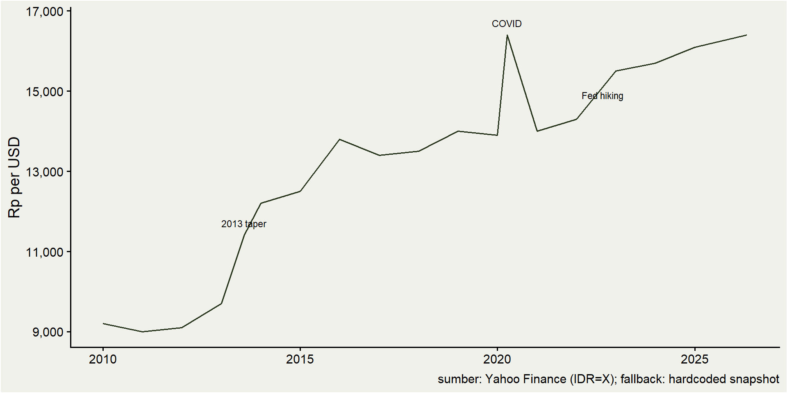
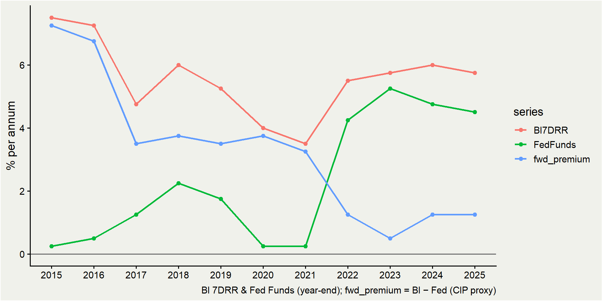
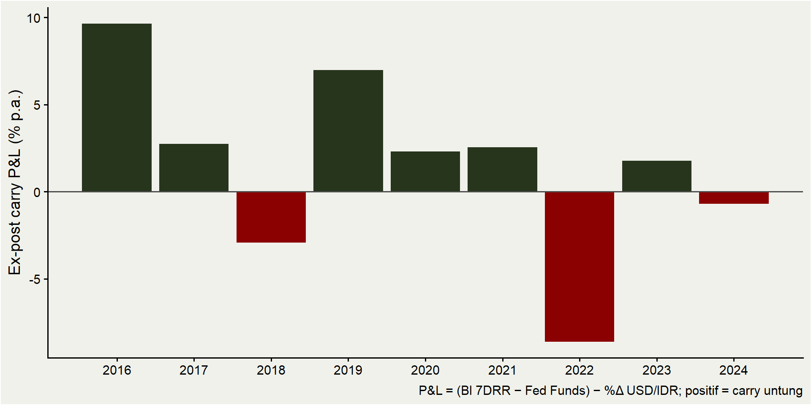
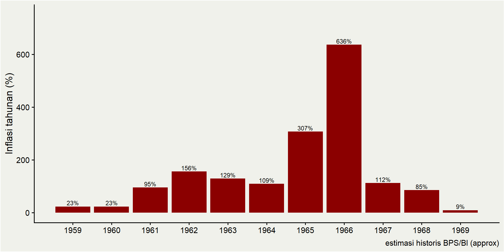
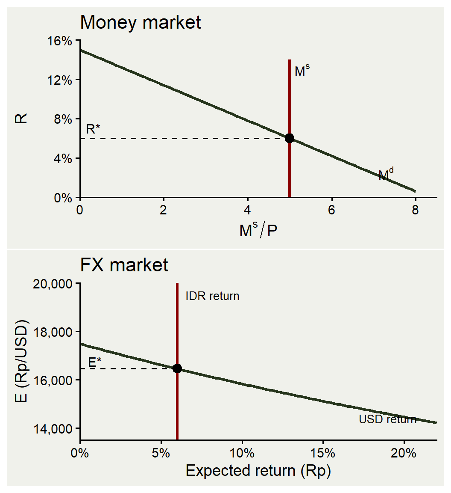
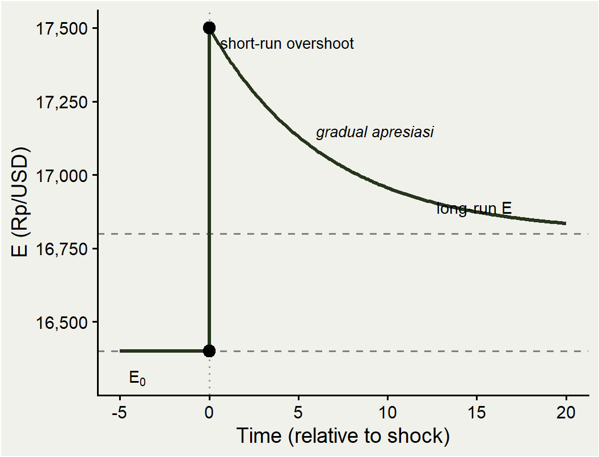

ECES905205 pertemuan 11
Invalid Date
Pekan lalu: BoP, current account, national income — semua dalam “uang”, tapi belum bahas bagaimana harga uang antar negara terbentuk.
Hari ini: KOM Ch.14 (FX market) + short-run Ch.15 (money & FX).
Roadmap: definisi nilai tukar → struktur pasar FX (spot, forward, swap, options) → returns, UIP, carry trade → forward & CIP → money basics & monetary policy ke FX.
Nilai tukar \(E\) = harga satu mata uang dalam mata uang lain.
Konvensi quotation ada dua:
Direct (Indonesian convention): Rp 16.400 per 1 USD.
Indirect: USD 0,0000610 per 1 Rp.
Sepanjang kuliah kita pakai \(E = Rp/USD\). Jadi \(E=16.400\) berarti 1 USD = Rp 16.400.
Naik = rupiah depresiasi. Turun = rupiah apresiasi. Ini bagian yang sering bikin bingung.
Misal \(E\) bergerak dari 16.400 → 16.800.
Untuk membeli 1 USD, perlu rupiah lebih banyak ⇒ rupiah depresiasi (terhadap dollar).
Equivalently, dollar appreciates terhadap rupiah.
Persentase: \(\Delta E / E = (16.800-16.400)/16.400 \approx 2{,}44\%\) depresiasi.
Direction-of-quote trap:
“Kurs naik” di media biasanya berarti rupiah melemah (karena yang diquote \(E=Rp/USD\)).
Kalau ditulis \(E=USD/Rp\) (jarang), “naik” justru artinya rupiah menguat.
Selalu tanya: yang naik itu angka quotation, bukan “nilai rupiah” sendiri.
Nilai tukar menghubungkan harga domestik dengan harga luar negeri.
Pertamina (impor crude): Brent USD 80/barel. Pada \(E=16.400\) → Rp 1,31 jt/barel. Jika \(E=17.000\) → Rp 1,36 jt/barel.
Sritex (eksportir tekstil): jual baju USD 10. Pada \(E=16.400\) → Rp 164.000. Jika \(E=17.000\) → Rp 170.000.
Eksportir senang ketika rupiah depresiasi, importir tidak.
| Rupiah depresiasi (\(E \uparrow\)) | Rupiah apresiasi (\(E \downarrow\)) | |
|---|---|---|
| Eksportir (Sritex, kopi, nikel) | + revenue Rp | − revenue Rp |
| Importir (BBM, pangan) | − cost naik | + cost turun |
| Konsumen barang impor (iPhone, Avanza) | − mahal | + murah |
| Pemegang utang USD | − beban naik | + beban turun |
| Turis asing ke Bali | + Indonesia murah | − Indonesia mahal |

\[ q = \frac{E \cdot P^*}{P} \]
di mana $P$ = harga domestik, $P^*$ = harga luar negeri, $E$ = nominal ER (Rp/USD).\(q\) menunjukkan daya beli relatif — bukan sekadar nominal.
Effective exchange rate (NEER/REER): rata-rata tertimbang nilai tukar terhadap basket partner dagang.
BI mempublikasikan NEER dan REER bulanan.
REER yang stabil ≠ nominal rate stabil; bisa nominal melemah tapi inflasi domestik tinggi → REER tetap.
Pembahasan formal PPP dan REER pekan depan (Ch.15 long-run).
Pasar FX adalah OTC (over-the-counter), bukan bursa.
Pelaku utama:
Commercial banks — market makers (BCA, Mandiri, BNI, BRI + global).
Non-bank FIs — hedge funds, asset managers, asuransi.
Korporasi — eksportir/importir hedging (Pertamina, Indofood, Astra).
Bank Indonesia — intervensi untuk stabilisasi.
Retail — kecil tapi tumbuh.
24 jam: Sydney → Tokyo → Singapore → London → New York.
BIS Triennial 2022: turnover global FX ≈ USD 7,5 T/hari.
Hub utama: London 38%, New York 19%, Singapore 9%, Hong Kong 7%, Tokyo 4%.
Spot: pengiriman T+2. Quote yang muncul di Bloomberg/Yahoo.
Forward: kunci kurs sekarang untuk pengiriman tanggal masa depan. Tenor 1m, 3m, 6m, 12m.
FX swap: spot leg + forward leg. Equivalent dengan collateralized lending antar mata uang.
Mengapa forward exists? Importir/eksportir butuh kepastian cashflow; bank butuh tools manage posisi.
FX futures: forward terstandarisasi di bursa (CME). Marked-to-market harian. Volume IDR kecil.
FX options:
Call USD = hak (bukan kewajiban) beli USD pada strike.
Put USD = hak jual USD.
Importir beli call USD = asuransi terhadap depresiasi rupiah.
Jika \(E_{Rp/USD}=16.400\) dan \(E_{JPY/USD}=150\), maka \(E_{Rp/JPY} \approx 109{,}3\).
Triangular arbitrage: jika quoted cross rate ≠ implied cross rate → trader arbitrase sampai gap tertutup.
Di deep market, cross rates ≈ implied. Tidak ada free lunch di pasangan major.
Bank-bank market maker menjaga kondisi no-arbitrage secara terus-menerus.
KOM: nilai tukar adalah harga aset.
Yang dipegang trader/investor adalah deposit dalam berbagai mata uang.
Yang menentukan equilibrium adalah expected return dari tiap deposit, bukan flow ekspor-impor saja.
Implikasi: nilai tukar bisa sangat volatile dan overshoot fundamentalnya.
Dua deposit 1-tahun:
IDR deposit: bunga \(R\) (BI 7DRR ≈ 5,75%).
USD deposit: bunga \(R^*\) (Fed Funds ≈ 4,5%).
Return diukur dalam rupiah:
IDR deposit: \(1 + R\).
USD deposit: \(\frac{E^e}{E}(1 + R^*)\) — beli USD, tabung, jual di \(E^e\) tahun depan.
Mana lebih besar? Tergantung expected appreciation/depreciation rupiah.
\[ \frac{E^e - E}{E} \]
di mana $E^e$ = ekspektasi nilai tukar masa depan, $E$ = nilai tukar saat ini.Misal \(E=16.400\), \(E^e=16.800\). Maka ekspektasi depresiasi \(\approx 2{,}44\%\).
Jika rupiah appreciate (expected): \(E^e < E\), angka ini negatif.
Note konvensi: ini adalah “expected depreciation rupiah” / “expected appreciation dollar” — karena \(E=Rp/USD\).
Approximation (orde-1):
\[ R^*_{\text{in Rp}} \approx R^* + \frac{E^e - E}{E} \]
Investor bandingkan:
IDR: \(R\)
USD (dalam Rp): \(R^* + (E^e-E)/E\)
Selisih:
\[ R - R^* - \frac{E^e - E}{E} \]
Intuisi:
\(R \uparrow\) → tarik investor ke IDR.
\(R^* \uparrow\) → tarik ke USD.
\(E^e \uparrow\) → simpan USD (USD akan apresiasi).
Investor neutral ketika selisih = 0.
Data: \(R = 5{,}75\%\), \(R^* = 4{,}50\%\), \(E = 16.400\), \(E^e = 16.800\).
Expected USD return (dalam Rp):
\[ R^* + \frac{E^e - E}{E} = 4{,}50\% + 2{,}44\% = 6{,}94\% \]
\[ R = R^* + \frac{E^e - E}{E} \]
Di equilibrium, return ekspektasi antar deposit (dalam mata uang sama) harus sama.
“Uncovered”: \(E^e\) adalah ekspektasi, bukan kurs yang dikunci kontrak. Investor menanggung risiko FX.
Jika UIP gagal → ada expected profit sistematis → ada risk premium (KOM abstraksikan).
Horizontal: expected return (dalam Rp).
Vertical: \(E\) (Rp/USD).
IDR return: vertikal di \(R\) (tidak tergantung \(E\)).
USD return: downward sloping — semakin \(E\) tinggi, semakin kecil expected depreciation.
Equilibrium \(E^*\): perpotongan dua kurva.
Tiga goncangan: \(R \uparrow\), \(R^* \uparrow\), \(E^e \uparrow\).

BI menaikkan \(R\) dari 5,75% → 6,25%.
Diagram UIP: garis vertikal IDR return bergeser ke kanan; USD return tidak bergerak.
Equilibrium baru: \(E\) turun → rupiah apresiasi.
Intuisi: bunga rupiah lebih tinggi → demand IDR deposit naik → IDR menguat.
Efek instan pada FX, bukan via jalur kredit.
Fed naikkan \(R^*\) → USD return curve geser ke kanan → \(E\) naik → rupiah depresiasi.
Kasus 2013 taper tantrum:
Mei 2013: Bernanke isyaratkan pengurangan QE.
Yield UST 10Y: 1,6% → 3% dalam 4 bulan.
USD/IDR melemah dari ~9.700 ke ~12.000 (≈ 24%) sampai akhir 2013.
EM currencies sangat sensitif ke “monetary signal” dari Fed.
\(E^e\) naik (rupiah diharapkan depresiasi) → USD return geser ke kanan → \(E\) naik sekarang juga.
Self-fulfilling: ekspektasi depresiasi → depresiasi aktual.
Kasus 2022 Fed hiking:
Fed naikkan rate 425 bps dalam 9 bulan.
Flight to USD safe haven.
USD/IDR: 14.300 (Jan) → 15.700 (Okt 2022).
BI ikut hike, tapi gap tidak cukup kompensasi ekspektasi.
Forward rate \(F\) = kurs yang dikunci sekarang untuk pengiriman masa depan.
Quote USD/IDR (ilustrasi):
| Tenor | Forward | Premium ann. |
|---|---|---|
| Spot | 16.400 | — |
| 1m | 16.420 | ≈ 1,5% |
| 3m | 16.490 | ≈ 2,2% |
| 6m | 16.580 | ≈ 2,2% |
| 12m | 16.760 | ≈ 2,2% |
Premium USD/IDR hampir selalu positif (refleksi differensial bunga).
Berapa premium yang “fair”? → CIP (slide berikutnya).

Pertamina kontrak crude 1 juta barel × USD 80 = USD 80 jt, settle 3 bulan lagi.
Tanpa hedge: jika \(E\) naik 16.400 → 17.000, biaya naik Rp 1,312 T → Rp 1,360 T (+Rp 48 miliar).
Dengan forward 3m @ 16.490: lock biaya USD 80 jt × 16.490 = Rp 1,319 T. Risiko FX hilang.
Trade-off: bayar premium ~Rp 7 miliar di atas spot — biaya “asuransi” FX.
Carry trade = pinjam di mata uang bunga rendah (funding currency), invest di mata uang bunga tinggi (target currency).
Klasik untuk IDR sebagai target currency:
Pinjam USD @ 4,5% (Fed Funds + sedikit spread).
Convert ke IDR pada spot \(E=16.400\).
Beli SBN 10Y dengan yield ≈ 6,5%.
Setelah 1 tahun, jual SBN, convert balik ke USD, lunasi pinjaman.
Return ekspektasi (per UIP) = \(R - R^* - \frac{E^e-E}{E} = 6{,}5 - 4{,}5 - 2{,}44 = -0{,}44\%\) (jika ekspektasi sesuai forward).
Tapi banyak trader bertaruh bahwa realisasi depresiasi < ekspektasi forward → ada profit ex-post.
Saat \(E\) stabil / rupiah apresiasi: spread positif = keuntungan murni.
Saat rupiah suddenly depreciate: keuntungan kumulatif bisa hilang dalam hitungan hari.
Episode tipikal:
2013 taper tantrum: IDR depresiasi 24% dalam ~4 bulan.
Maret 2020 (COVID): IDR ke 16.500 dalam beberapa minggu.
2022 Fed hiking: IDR depresiasi ~10% dalam setahun.
Karakteristik klasik: “picking up nickels in front of a steamroller.”

Covered Interest Parity:
\[ R = R^* + \frac{F - E}{E} \]
Equivalen:
\[ \frac{F}{E} = \frac{1+R}{1+R^*} \]
Forward premium = differensial bunga; jika tidak → arbitrase.
Arbitrase jika \(F\) terlalu tinggi:
| Step | Cashflow |
|---|---|
| Borrow USD 1 @ \(R^*\) | \(+1\) USD |
| Convert ke Rp | \(+E\) Rp |
| Deposit Rp @ \(R\) | \(E(1+R)\) Rp |
| Sell forward \(F\) | \(E(1+R)/F\) USD |
| Repay USD loan | \(-(1+R^*)\) |
| Profit | \(E(1+R)/F - (1+R^*)\) |
Positif jika \(F < E(1+R)/(1+R^*)\).
CIP holds karena arbitrage — tidak butuh asumsi ekspektasi. Jika gagal, ada free money.
UIP butuh asumsi rasional & risk-neutral expectations. Empiris: sering gagal.
Forward as predictor: secara statistik, \(F\) adalah biased and noisy predictor untuk \(E^e\).
Forward premium puzzle: currency dengan high interest rate justru cenderung appreciate, bukan depreciate (kebalikan UIP).
Implikasi: carry trade rata-rata profitable secara ex-post (dengan risiko crash).
2007-08 Global Financial Crisis: CIP yang “selalu holds” tiba-tiba gagal.
Apa yang terjadi?
Bank-bank tidak mau lend USD ke counterparty Eropa karena khawatir solvensi.
Akses ke USD funding terbatas → bank Eropa harus pay premium untuk USD via swap → \(F\) deviates dari teori CIP.
Pelajaran:
CIP holds only when ada pasar funding yang lancar.
“No arbitrage” mengasumsikan akses kredit yang bebas — asumsi yang gagal saat krisis.
Post-2008: CIP basis (cross-currency basis) tetap non-zero untuk banyak pasangan, refleksi regulasi & balance sheet costs perbankan.
Money = aset yang diterima luas sebagai pembayaran.
Klasifikasi BI (=IMF standard):
M1 (narrow) = uang kartal + giro/demand deposits.
M2 (broad) = M1 + savings + small time deposits + e-money + uang kuasi.
M3 = M2 + securities lainnya.
Per April 2026 (ilustrasi): M1 ≈ Rp 5.000 T, M2 ≈ Rp 9.500 T.
BI publish bulanan di SEKI. Yang penting: kontrol BI atas supply, bukan kuantitasnya.
Medium of exchange: alat tukar — menggantikan barter, mengurangi cost dari “double coincidence of wants”.
Unit of account: ukuran nilai. Kita pricing dalam Rupiah, bukan dalam beras atau emas.
Store of value: cara menyimpan daya beli antar waktu. Tabung sekarang, konsumsi nanti.
Pertanyaan: mengapa transaksi domestik Indonesia pakai Rupiah, bukan USD?
Konvensi & UU mata uang (UU No. 7/2011).
Network externality: makin banyak yang pakai, makin berguna sebagai MoE.
Tapi fungsi store of value Rupiah bisa terbongkar jika inflasi tidak terkendali — kasus berikutnya.
Kronologi:
1959-65: defisit APBN meledak (proyek Nasakom, konfrontasi Malaysia), didanai pencetakan uang via BI.
1965: Sanering — re-denominasi Rp 1.000 → Rp 1, untuk “menarik” supply uang.
1966: inflasi tahunan ≈ 636% (estimasi BPS/BI historis).
Setelah Orde Baru (1967+): IMF stabilisasi, fiscal tightening, inflasi turun ke ~10% pada 1969.
Mengapa relevan untuk FX:
Money supply ↑↑ → P ↑↑ → IDR collapse vs USD.
Functions of money rusak: penduduk lari ke USD, emas, atau barter.

BI sebagai otoritas moneter. Tools utama:
OMO: beli/jual SBI/SBN untuk inject/absorb likuiditas (reverse repo harian).
Reserve requirement (GWM): cadangan minimum bank di BI (≈ 9%).
BI 7DRR: policy rate sejak 2016, signal ke pasar interbank.
Standing facilities: deposit & lending facility = koridor di sekitar 7DRR.
Short-run: BI sets \(R\) (bukan \(M\)). Demand uang menentukan \(M\) pada \(R\) tersebut.
Demand uang \(M^d\) secara kualitatif:
\(\downarrow\) ketika \(R\) \(\uparrow\): bunga deposit lebih menarik → kurang pegang cash.
\(\uparrow\) ketika \(P\) \(\uparrow\): butuh lebih banyak cash untuk transaksi yang sama dalam nominal.
\(\uparrow\) ketika \(Y\) \(\uparrow\): transaksi lebih banyak → butuh lebih banyak cash.
Model formal (KOM Ch.15): \(M^d = P \cdot L(R, Y)\).
Itu nanti pekan depan. Hari ini cukup pakai intuisi: ketika \(R\) turun, orang lebih banyak pegang cash; ketika \(R\) naik, sebaliknya.
Sejauh ini \(R\) kita pakai sebagai given di UIP. Dari mana \(R\)?
Versi short-run: BI set \(R\) melalui 7DRR.
Money market: \(M^s = M^d(R, P, Y)\), dengan \(M^s\) “controlled” lewat OMO.
Equilibrium: \(R\) konsisten dengan target BI.
Begitu \(R\) terbentuk di money market → flows ke FX market via UIP.
Pekan depan: derivasi formal dengan model \(M^d\).
Money market (atas):
FX market (bawah):
Kunci: \(R^*\) dari money market → garis vertikal di FX market.

BI turunkan 7DRR 25 bps.
Money market: \(R\) turun. FX: IDR return geser ke kiri; USD return tidak bergerak.
Equilibrium baru: \(E\) naik → rupiah depresiasi.
Intuisi: rate cut → investor cari yield di USD → demand IDR turun.
Mekanisme yang membuat independent monetary policy ada “harga”-nya dalam floating ER.
Fed turunkan policy rate.
Foreign money market: \(R^*\) turun. FX: USD return geser ke kiri; IDR return tidak.
Equilibrium baru: \(E\) turun → rupiah apresiasi.
Simetris: dovish Fed = tailwind untuk EM currencies termasuk IDR.
Itu sebabnya pasar Indonesia sangat memperhatikan FOMC.
Short-run (yang baru saja): \(P\) sticky. Yang bergerak: \(R\) → \(E\) → (perlahan) \(P\).
Long-run: \(P\) menyesuaikan penuh.
\(M \uparrow\) → \(P \uparrow\) proporsional → \(E \uparrow\) proporsional (PPP).
“Money neutrality”: real variables tidak berubah.
Gap antara short-run dan long-run → fenomena overshooting.
Dornbusch (1976):
\(M \uparrow\) langsung dalam short-run.
\(P\) sticky → \(M/P \uparrow\) → \(R \downarrow\).
UIP butuh \((E^e-E)/E < 0\) → rupiah diharapkan apresiasi setelah jump awal.
\(E\) harus melompat melewati long-run level, baru perlahan apresiasi ke long-run.
Hasilnya: ER overshoots — gerak inisial > shift fundamental.
Implikasi: FX volatility > volatility fundamental. Fitur empiris, bukan bug.

\(t<0\): equilibrium di \(E_0\).
\(t=0\): BI ekspansi moneter permanen → \(E\) jump naik melebihi long-run.
\(t>0\): \(E\) perlahan apresiasi ke long-run baru (di atas \(E_0\)).
Magnitude overshoot tergantung stickiness harga.
Nilai tukar adalah harga aset, ditentukan oleh expected return.
UIP: equilibrium antara \(R\), \(R^*\), \(E\), \(E^e\).
CIP berlaku karena arbitrase. UIP sering gagal → carry trade exist.
Forward & options = tools untuk hedge (Pertamina) atau bet (carry trader).
BI set \(R\) via 7DRR → langsung berimplikasi ke \(E\) via UIP.
Short-run: \(P\) sticky → ER bisa overshoot fundamental.
Diketahui: \(R = 6{,}00\%\), \(R^* = 4{,}25\%\), \(E = 16.400\). UIP holds.
Berapa \(E^e\) (1 tahun ke depan)?
Solusi:
\[ \frac{E^e - E}{E} = R - R^* = 1{,}75\% \]
\[ E^e = 16.400 \times 1{,}0175 \approx 16.687 \]
Pasar mengekspektasikan rupiah depresiasi ringan ke ≈ Rp 16.687/USD.
Trader pinjam USD 1 jt @ 4,5% selama 1 tahun. Convert ke IDR pada \(E=16.400\) → Rp 16,4 mlr. Invest di SBN @ 6,5% → Rp 17,466 mlr.
Skenario A (\(E\) stabil 16.400): convert balik = USD 1,065 jt. Lunasi 1,045 jt → profit USD 20.000.
Skenario B (\(E\) ke 17.000, depresiasi 3,7%): convert balik = USD 1,027 jt → loss USD 18.000.
Pelajaran: carry bertaruh rupiah tidak depresiasi melebihi differensial bunga (~2%).
Diketahui: \(R = 6{,}00\%\), \(R^* = 4{,}25\%\), \(E = 16.400\), \(F = 16.900\) (1Y).
Apakah ada arbitrase?
Solusi: CIP fair forward:
\[ F^* = E \cdot \frac{1+R}{1+R^*} = 16.400 \cdot \frac{1{,}06}{1{,}0425} \approx 16.675 \]
\(F = 16.900 > F^* = 16.675\). Strategi: borrow USD, swap to Rp, deposit Rp, sell forward 1Y. Profit ≈ 1,37% per USD borrowed.